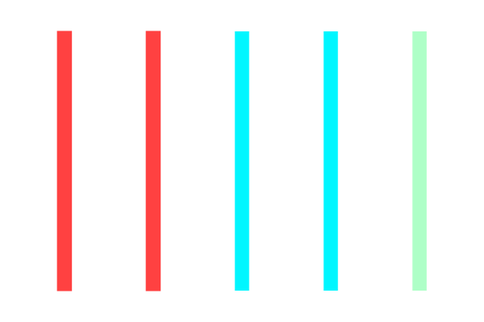

C

F
광 섬유의 규격:OM(Optical Multimode) 시리즈

-
왼쪽부터 순서대로 OM1, OM2, OM3, OM4, OM5까지 있으며 색상으로 구분
지을 수 있으며, OM시리즈는 멀티모드로 되어있습니다.
-
OM1, OM2는 주황 / OM3, OM4는 민트 / OM5는 청록색
-
직경은 왼쪽부터 62.5 μm, 50 μm, 50 μm, 50 μm, 50 μm입니다.
-
과거 OM1이 표준이였지만, 현재는 거의 사용하지 않습니다. OM2는 초기
기가비트 표준이였고, OM3는 10G 시대의 표준입니다. OM4 OM3의 강화
버전, 더 먼 거리 전송 가능하며, OM5는 SWDM(단파장 분할 다중화)
지원으로 최신 데이터 센터용으로 주로 사용합니다.
싱글모드(Single Mode)
-
광 섬유의 싱글모드 또한 노란색으로 구분 지을 수 있습니다.
-
싱글모드의 핵심은 9μm로 아주 좁은 통로입니다. 이는 0.009mm를
의미하며, 머리카락 굵기의 약 10분의 1 정도크기입니다.
-
말 그대로 단일 경로로 이루어져 있으며, 장거리에 적합합니다.
장거리인만큼 장비의 가격대도 비싼 것이 특징입니다.